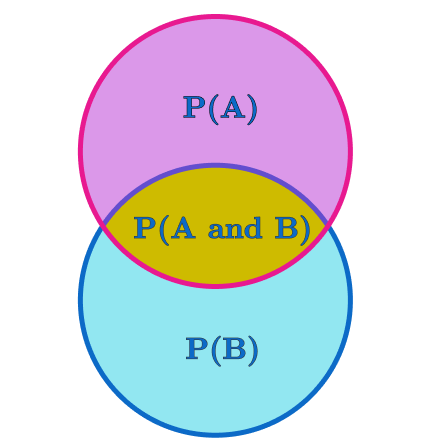

Data¶
88. Big Data¶
KEY QUESTIONS
What does Facebook or VK know about you?
Is big data just counting?
Can big data be intelligent?
WHY DOES THIS MATTER?
Data analysis, whether the data is big or small is really all about counting. Typically, ‘big data’ may involve the counting of words or clicks on a webpage. But what makes ‘big data’ so countable? What, in fact are we counting? When is one click the same as another?
The counting that Facebook and other social media companies do does seem to be remarkably effective. It is able to make prediction about the social status and economic value of individual users, it is able to predict how they might vote, and it is able to target them with advertising that fits their profile.
Google translate does a remarkable job in converting one language to another by simply counting words.
Text analysis software, which Google translate relies on, works by counting individual words, and groups of words. For example, a bigram is group of two adjacent words (“the cat”, “cat sat”, “sat on”), and equally we can count trigrams, with 3 words.
However, it may be going too far to say that intelligence results from counting. The counting removes uncertainties about things, and presents summaries of a person or a translation which may or may not be correct. However, such summaries are never complete: in any process of counting, what is not counted is usually the most important thing.
89. What is counting?¶
KEY QUESTIONS
What is exactly the same as something else?
Can we imagine counting anything outside time?
Is counting merely a social convention?
WHY DOES THIS MATTER?
The idea of quantifying anything is problematic, and in order to quantify, a key distinction has to be made about what is the ‘same’ as something else. All quantities are, at some level, relations.
Bateson argues: “It is impossible, in principle, to explain any pattern by invoking a single quantity. But note that a ratio between two quantities is already the beginning of pattern. In others words, quantity and pattern are of different logical type and do not readily fit together in the same thinking. “[@bateson_steps_1987]
Counting is the determination and aggregation of things which are like one another (analogies), and of surprises - or anomalies. Analogies are not determinable without the determination of anomalies. Fundamentally there is a distinction.
These distinctions have to be agreed - at least between scientists. If scientists didn’t agree what they were counting then coherent scientific discourse would not be possible.
Whenever you see a data analytical report, you should always ask “What is being counted?”, “What is considered to be the same?”, “What is considered to be different?”
Agreement of analogies and anomalies is a conversation between scientists. Without actual embodied participation in the phenomena which produce the analogies and anomalies, there is no way of coordinating the conversation. Without any way of coordinating the conversation, there is an encroaching mysticism in the whole process of data analysis.
Data risks becoming a kind of religion divorced from science. Education driven by data in this way is also divorced from science. We end up in the worst-case scenario: an educational system renouncing the humanities and arts because they are unscientific, whilst embracing a science which is in the thrall of unreliable data analysis!
90. Senders and Receivers¶
KEY QUESTIONS
What must a sender do to a message to ensure that it is correctly received?
How might the ‘noise’ of the channel of communication be overcome?
WHY DOES THIS MATTER?
Imagine you are trying to communicate to somebody in a noisy room where there is a distance between you and the other person. What do you do? Shout? Wave your arms? Text them? Maybe you try all sorts of things. What you are doing is trying to say the thing you want to say in many different ways. This is amplification.
Shannon drew a diagram indicating the basic hurdle of communication - some kind of amplification was required.
For Shannon, amplification requires the adding of ‘redundancy’. Redundancy might mean adding extra bits to the message to ensure that the differences in entropy between the different symbols would still be apparent even if the transmission was degraded. To do this, Shannon argued that redundancy was a critical element in message transmission.
If redundancy was added by adding extra bits to the message then it meant that the bandwidth between the sender and the receiver should be increased. If redundancy was added through repetition, transmission would be slower.
So by calculating the complexity of the message to be sent, the degradation of the signal on the medium over a distance, and the amount of redundancy that was needed to be added in order to counter the effects of degradation, Shannon was able to calculate the necessary bandwidth for transmission.
Although he never considered that his mathematical theory was applicable outside the domain of electronic communication, Shannon’s theory and ideas about redundancy have been very useful in understanding human communication.
{#ref:shannon
width=”columnwidth”}
91. Shannon Information Theory¶
KEY QUESTIONS
Can the meaning of something be calculated?
Can the information in something be calculated?
Can knowledge be calculated?
WHY DOES THIS MATTER?
Shannon’s Information theory calculations are detailed in his book “A Mathematical Theory of Communication” [@shannon_mathematical_1949]. In this book, he adapted Boltzmann’s idea of thermodynamic entropy (which was a measure of heat dispersion) into a measure of the surprisingness of messages transmitted through a medium.
Information theory underpins the principles of digital communication, compression and encryption. Without it, we would not have the basic mechanics of the internet, let alone the transmission of video, audio, pictures or text which is carried over it.
It has found application beyond technology: in biology, Shannon entropy has been used as an index of biological growth, of ecosystem development [@odum_fundamentals_1959] and epigenesis [@deacon_incomplete_2012]; in physics, it is used to explore quantum mechanics and quantum computing [@results_programming_2007];
in the social sciences, it is used to explore scientific discourse and big data [@leydesdorff_knowledge-based_2006]; in geography, it is used to understand urban development [@haken_information_2015];
in neuroscience it is used to explore the working of the brain [@ashby_design_2013]; in anthropology, it is used to explore cultural behaviour [@bateson_steps_1987]; in the arts, it is used to explore aesthetics [@kanach_formalized_1992].
Information theory measures the complexity of a message by calculating the probability of each event and producing an index of the ‘average surprisingness’ of a sequence of messages expressed in terms of the number of ‘bits’ or on-off switches which would be required to transmit a message of this complexity.
Information is not the same a meaning. Shannon never believed that meaning could be understood through his theory, although other theorists (including Shannon’s collaborator, Warren Weaver) do believe that deeper issues of meaning can be understood in this way.
92. How Information Theory Works¶
KEY QUESTIONS
How does Information Theory provide an index to complexity?
Why is it useful?
WHY DOES THIS MATTER?
Consider a very simple message:
A A A A A A A A
For each symbol in a message, we can calculate its surprisingness by multiplying its probability by the \(log_2\) of its probability. The total surprisingness of the message is the sum of this calculation for all the different symbols which appear. With 8 A’s, the number of symbols is 1, and the probability of A appearing is 1. The \(log\) of 1 is 0, therefore, the surprisingness of the message is \(1 times 0 = 0\).
Now consider this sequence:
A A B A A A A B
Here, there are two symbols, so we calculate the probability of each symbol and multiply it by the \(log\) of the probability of each symbol. So the probability of A is \(frac{6}{8}\) and the probability of B is \(frac{2}{8} = frac{1}{4}\). Information theory calculates \(log\)s to base 2. This is because in digital signals, something can be either on or off. Shannon’s central problem which he sought to address was how many on/off switches would be required to transmit a particular message with a particular degree of surprisingness. There had to be enough switches to generate the variety of different symbols that were required to be sent.
So we can use \(log_2\) to calculate \(log_2 frac{6}{8} = -0.415\) and \(log_2 frac{1}{4} = -2\). Now we multiply these \(log\) values with the probability of those values to give \(frac{6}{8} times -0.415 = -0.311\) and \(frac{1}{4} times -2 = 0.5\). Adding them together gives \(-0.811\). So the addition of an extra symbol produces quite a jump in entropy. Note, if there was only one B in a sea of A’s, then the average surprisingness would be higher: \(log_2frac{1}{8} = -3\) and \(log_2frac{7}{8} = -0.192\), and multiplying these by the probabilities gives: \(frac{1}{8} times -3 = -0.375\) and \(frac{7}{8} times -0.192 = -0.168\) giving a total of \(0.543\).
93. Shannon Redundancy¶
KEY QUESTIONS
Is saying the same thing many times, in many different ways a waste or a necessity?
How much of life is repetition?
WHY DOES THIS MATTER?
Redundancy basically means repeating something. However, things can be repeated in different ways: you can send a text, make a phone call, send a letter, make a video, etc.
Redundancy is important because it is the way in which we try to ensure that a message is sent successfully and its meaning is understood.
In Shannon information theory, the challenge was to send a message over a ‘noisy’ medium (think of a noisy room). In Shannon’s theory, this might mean repeating the message, adding extra bits to check the transmission, or to present the same message in a different way. In fact, whichever technique is used, redundancy amounts to creating alternative descriptions of the same thing.
When we talk to each other, very often the same idea gets expressed in many different ways. The act of teaching is about finding many ways in which a concept can be explained (‘think about it like this’, ‘do this exercise’, ‘let me tell you a story…’)
In Shannon’s theory, redundancy is a way of thinking about the rules which say that some symbols are used more often than others. In language, this is called a grammar. Once somebody knows the grammar, messages are more easily understood.
Redundancy is the inverse of information. If information is the ‘figure’, redundancy is the ‘background’.
94. Probability¶
KEY QUESTIONS
What is the difference between the chance of rolling a 6 with dice, and the chance of it raining tomorrow?
If you are told you have a 2% chance of having a heart attack, what does that mean?
Is improbability the same as surprisingness?
WHY DOES THIS MATTER?
The mathematical theory of probability focuses on those situations, such as games, where the number of possible options is clearly known.
Many events in daily life do not have this property: the number of possible factors and options is often unknown.
Some things which might be described as ‘improbable’ are ‘surprising’. However, what is perceived as surprising might be subjective ignorance rather than objective probability.
However in modern statistics and game theory, uncertainties over the maximum number of possible events is often overlooked: instead real situations are treated like abstract ‘game’ situations.
The problem of surprisingness is related to the issue of induction: that if something has happened before, it becomes more likely to happen again. Again, this assumption can be unreliable.
Probability is very important in quantum mechanics because there is no certainty about the position of a subatomic particle until it is observed. Therefore, the position of the particle is represented by a ‘wave function’ which is effectively a map of the probabilities of the particle at different positions. These probability distributions are, however, accurate in making predictions - a feature that has been exploited in quantum computing.

95. Ergodicity¶
KEY QUESTION
Is the complexity of something over a period of time the same as the complexity of that thing over a different period of time?
What is the difference in complexity from one period of time to another?
How does complexity change?
WHY DOES THIS MATTER?
Ergodicity is a statistical property of system whereby a measure of its behaviour over a particular time period is seen to be the same as a measure of its behaviour over a long period. It’s often used in information theory as a way of describing the Shannon entropy of a system over one period of time to another. For example, Shannon measured the entropy of the English language as a distribution of letters. This measurement is ergodic to the extent that the shorter sample contains a representative sample of the grammar and syntax of the language, and that over a larger sample the value of the entropy of the language is no different.
The principles of ergodicity rely on some assumptions:
the “alphabet” of what is counted is made explicit at the beginning and does not change.
the constraints which determine the distribution of symbols do not change
Shannon’s reticence to apply information theory to the study of meaning, or the more profound features of living systems rested, I believe, on the fact that he knew that with living systems, neither of these assumptions about ergodicity are true.
Living systems do not present a complete countable “alphabet” of things to count at the outset. Countable things are emergent: before you have fingers, you have cells. Partly this is because the second assumption is wrong - the constraints within which living things grow and adapt are continually changing. Indeed, the very process of life is a process of auto-generating constraint - what the biologists call “autocatalysis”.
Learning, for example, is part of a living process. Learning conversations are rather like dances where nobody quite knows the rules, and indeed, the rules change as it goes along. But somehow the whole thing has coherence. This is a mystery which I believe the analysis of music can help illuminate. Both music and learning conversations develop by creating new constraints and emerging new significant (countable) things. The dynamics and effectiveness of a learning conversation, as a piece of music, rests on how those constraints interact. It turns out that each new expression is a redundant expression - it says something that has already been said before but in a different way.